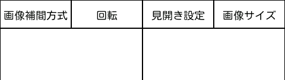

イメージ表示画面の説明
操作方法
画像のスクロール
画像が画面からはみ出して表示されている場合、画面上端のメニューと下端のページ選択を除く部分をスワイプすることでスクロールします。前ページ／次ページへの遷移
画面の上端／下端を除く部分の左側のタップで前ページ、右側のタップで次ページに移動します。メニューから呼び出すイメージ表示画面の設定で「次ページ/前ページ操作の入替」を有効にした場合は逆の操作になります。

ページ選択
画面の下端をスワイプすることでページを選択できます。ページ選択中は画面上部に現在のページやファイル名等が表示されます。
左端のタッチで先頭ページ、右端のタッチで最終ページに移動します。

部分的なズーム表示
画面の上端／下端を除く部分を長押しするとズームが表示されます。そのままタッチしている部分を移動することで任意の場所をズーム表示できます。
任意の表示倍率での表示
画面の上端／下端を除く部分でピンチイン／ピンチアウトを行うと任意の倍率で表示できます。元の倍率に戻したい場合は画面上部の「画像サイズ」を選択してください。
画面の回転
イメージ画面の設定で「回転あり」としている場合は端末の持ち方に合わせて自動的に回転します。縦固定又は横固定を設定している場合は表示方向が固定されますが、カメラボタンに回転を割り当てている場合はボタンを押す度に縦／横表示が切り替わります。
一時的な画面設定の変更
画面上端が表示設定を呼び出すメニューとなっています。タッチすると設定の名称が表示されますので設定する項目を選択してください。

画像補間方式
拡大／縮小する際に画像を補間するアルゴリズムを選択します。- 最近傍補間 他の方式よりも高速です。
- 双一次補間 バイリニア補間方式とも呼ばれます。
- 双一次補間（二段階） 縮小するサイズが約75%以下の場合、双一次補間方式で一度中間のサイズに縮小しそこから更に最終的なサイズに縮小を行います。
- 双三次補間 バイキュービック補間方式とも呼ばれます。
- 双三次補間（二段階） 縮小するサイズが約75%以下の場合、双三次補間方式で一度中間のサイズに縮小しそこから更に最終的なサイズに縮小を行います。
縮小処理では途中のラインを間引いて表示するため文字などは読みにくくなります。
拡大処理ではドットの形そのままぼやけずに拡大されます。
双三次補間よりも速いですが、双三次補間に比べて輪郭がぼやけ気味になります。
一気に縮小することで情報が欠落して画像が粗くなるのが少し改善されます。
双一次補間よりも時間がかかりますが綺麗だと思います。（個人の感想です）
双一次補間に比べて輪郭がシャープ気味になります。
一気に縮小しすることで情報が欠落して画像が粗くなるのが少し改善されます。
回転
画像を回転して表示します。画像が縦長と横長のどちらであるかは回転後の状態で判断します。
- 回転なしで表示
- 90°回転して表示
- 180°回転して表示
- 270°回転して表示
見開き設定
見開きページをどのように表示するかを選択します。- そのまま 画像を１枚ずつ表示します。
- 見開き表示 縦長画像であれば横に２枚並べて表示します。
- 単ページ表示 横長画像であれば左右に分割して半分ずつ表示します。
横長画像であればそのまま１枚を表示します。
縦長画像であればそのまま１枚を表示します。
画像サイズ
表示サイズの初期値を選択します。メニューから呼び出すイメージ表示画面の設定で「拡大しない」の設定が有効の場合は元画像のサイズ以上に拡大しません。
- 元のサイズで表示 画像サイズのまま表示します。
- 幅に合わせて表示 画像の縦横比のまま画面の幅に拡大／縮小して表示します。
- 高さに合わせて表示 画像の縦横比のまま画面の高さに拡大／縮小して表示します。
- 全体を表示 画像の縦横比のまま画面からはみ出さないように拡大／縮小して表示します。
- 画面全体で表示 画像の縦横比を無視して画面いっぱいに拡大／縮小して表示します。
音操作
画像のスクロール
端末のマイクに特定の音のパターンを聞かせることでページめくりとスクロールの操作ができます。マイクに息を吹きかけたり、舌を鳴らすなどで操作できます。
思いつきで付けた機能なので実用性についてはお察しください。
- 短い音（息の場合はフッ） 次ページへ移動。
- 短い音＋短い音（息の場合はフッフッ） 前ページへ移動。
- 長い音（息の場合はフー） 音が続いている間、次ページの方向へスクロール。
- 短音＋長い音（息の場合はフッフー） 音が続いている間、前ページの方向へスクロール。